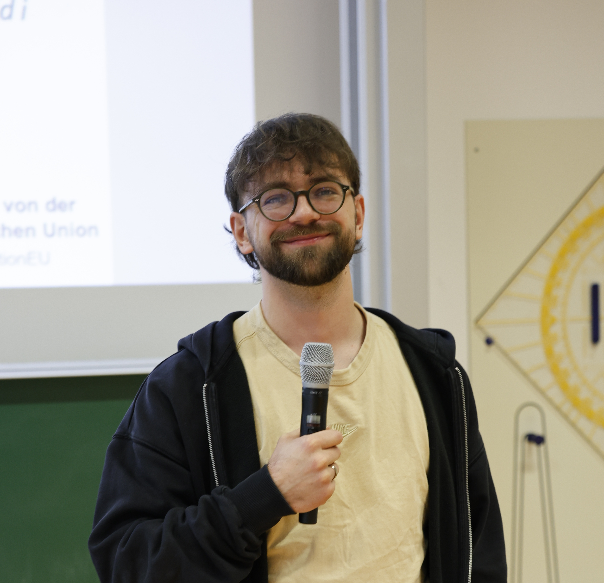

I am a fifth-year PhD candidate with the Institute for IT Security at University of Lübeck, advised by Esfandiar Mohammadi. My main interests are differential privacy and machine learning. I want to improve the utility-privacy trade-offs of algorithms and enrich the understanding of data privacy and robustness in machine learning.
I am also a co-founder of a startup interested in medical AI applications.
Outside of work, I enjoy spending time with my wife, working out and spending time outdoors with my dog.
DP-HYPE: Distributed Differentially Private Hyperparameter Search
Johannes Liebenow, Thorsten Peinemann, Esfandiar Mohammadi
In PoPETS 2026. [PDF]
S-BDT: Distributed Differentially Private Gradient Boosted Decision Trees
Thorsten Peinemann*, Moritz Kirschte*, Joshua Stock, Carlos Cotrini, Esfandiar Mohammadi
*The first two authors equally contributed to this work.
In ACM CCS 2024. [PDF] [Code]
Non-omniscient backdoor injection with a single poison sample: Proving the one-poison hypothesis for linear classification, linear regression, and 2-layer ReLU neural networks
Thorsten Peinemann, Paula Arnold, Sebastian Berndt, Thomas Eisenbarth, Esfandiar Mohammadi
In Submission. [PDF]
MammothDP: Differentially Private Boosted Decision Trees, hyperparameter-free and ready for Trusted Hardware
Moritz Kirschte, Thorsten Peinemann, Kari Kostiainen, Jan Wichelmann, Thomas Eisenbarth, Esfandiar Mohammadi
In Submission. [PDF]
Email: t.peinemann@uni-luebeck.de
LinkedIn: Thorsten Peinemann